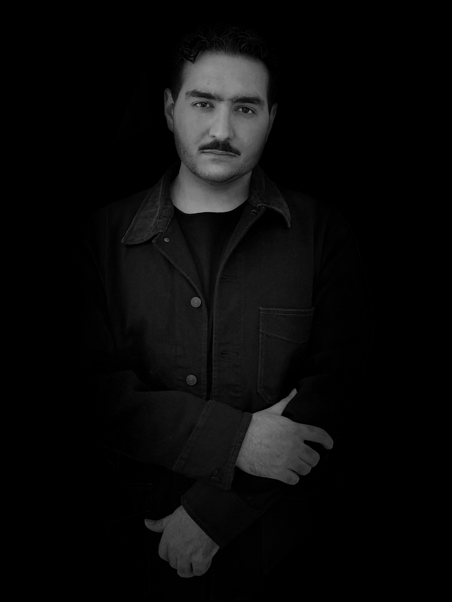

César Jesús Tijerina Lugoleos es un artista digital y conceptual cuya práctica se desarrolla entre la dirección creativa, la cinematografía, la experimentación visual y los nuevos medios. Es licenciado en Animación y Arte Digital por el Tecnológico de Monterrey, con concentración en Animación 2D, 3D, Desarrollo Visual y Cinematografía. Actualmente se encuentra próximo a concluir la Maestría en Arte Digital y Nuevos Medios en la misma institución.
Su trayectoria artística parte de una búsqueda constante por expandir las posibilidades expresivas de los medios digitales, explorando las relaciones entre el cuerpo, la identidad, la memoria, la percepción y la tecnología. Su trabajo se orienta hacia la construcción de experiencias visuales y conceptuales que cuestionan las formas convencionales de representación, integrando lenguajes provenientes del arte contemporáneo, la imagen cinematográfica, la experimentación audiovisual y los entornos digitales. Desde una perspectiva experimental y abstracta, concibe el arte como un espacio de investigación donde las experiencias personales pueden transformarse en reflexiones colectivas. Su práctica busca trascender la dimensión estética de la imagen para explorar sus capacidades narrativas, emocionales y críticas, estableciendo diálogos entre lo íntimo y lo universal, lo físico y lo digital, lo visible y aquello que permanece oculto.
Esta aproximación encuentra una expresión particularmente personal en Mis Manos. Mis Uñas., proyecto que surge de su experiencia con la psoriasis ungueal desde la infancia. A través de la reproducción tridimensional, el archivo autobiográfico y la exploración digital, la obra transforma una condición corporal históricamente vinculada al dolor y al ocultamiento en un proceso artístico de reconocimiento, exposición y aceptación.
Su dirección artística se caracteriza por una búsqueda de lenguajes experimentales, abstractos y conceptuales, en los que la tecnología funciona como un medio para reinterpretar la experiencia humana y abrir nuevas posibilidades de reflexión sobre nuestra relación con el cuerpo, la imagen y la identidad.
Arrastra de lado a lado para girar las manos.
Mis Manos. Mis Uñas. es una exploración artística y autobiográfica que surge de una condición crónica que ha acompañado al artista desde los tres años: la psoriasis ungueal. A partir de esta experiencia, la obra investiga las relaciones entre el cuerpo, la memoria, la identidad y las formas en que una diferencia física puede transformar nuestra percepción de nosotros mismos y nuestra relación con los demás.
La instalación presenta dos reproducciones tridimensionales de las manos del artista, dispuestas sobre un pedestal y concebidas para que el espectador pueda tomarlas, acercarse y observarlas directamente. Este gesto traslada una experiencia corporal íntima al espacio público, transformando aquello que durante años permaneció oculto en una posibilidad de contacto, exposición y reconocimiento.
La pieza se acompaña de un archivo visual compuesto por fotografías personales, documentos familiares, registros microscópicos y exploraciones digitales. Estos materiales reconstruyen distintas dimensiones de una misma experiencia, estableciendo relaciones entre la observación médica, la memoria autobiográfica y la interpretación artística. El cuerpo deja de presentarse únicamente como un organismo sujeto al diagnóstico y se convierte también en un territorio de significados, recuerdos y transformaciones.
A través de la escultura, la documentación y los nuevos medios, la obra propone una reflexión sobre los límites entre lo considerado normal y aquello que socialmente se percibe como diferente. Las manos, elementos fundamentales del contacto y la expresión humana, se convierten en un espacio donde convergen la vulnerabilidad, la resistencia y la construcción de identidad.
Entre el dolor, el ocultamiento y la aceptación, Mis Manos. Mis Uñas. plantea una pregunta central: ¿Qué ocurre cuando una diferencia corporal deja de entenderse como una anomalía y comienza a reconocerse como parte de nuestra identidad? Más que representar una condición médica, la obra busca resignificar una experiencia personal y abrir un diálogo sobre la manera en que habitamos, observamos y aceptamos nuestros propios cuerpos.